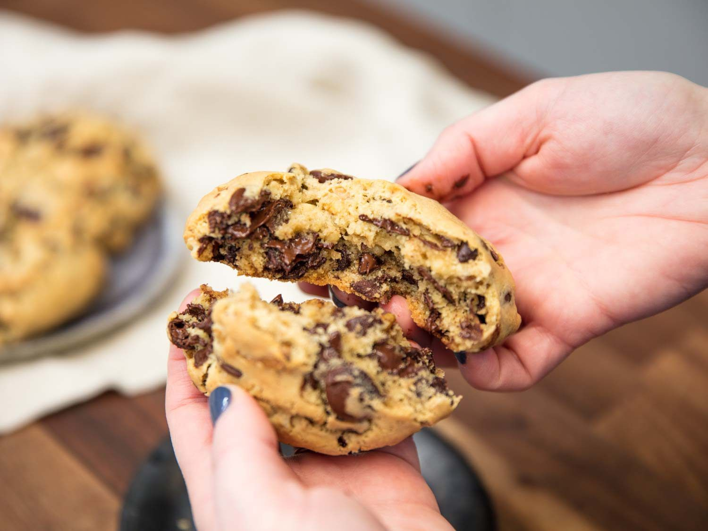

Return to Homepage
Levain Cookies

Description
Utterly delicious chocolate chip cookies that somehow strike the balance of crispy, pillowy soft, and delectably
doughy are just a day away from delighting you and your family. These cookies may take a bit of extra work
compared to your standard fare chocolate chip cookie, but they're worth it. No recipe has better captured the
look, taste, and feel of the classic New York style cookie.
Ingredients
- 113g unsalted butter, softened
- 113g light brown sugar
- 100g white sugar
- 15g vanilla extract
- 8g kosher salt
- 1 3/4 teaspoons baking powder
- 1 teaspoon baking soda
- a pinch of nutmeg
- 2 large eggs, straight from the fridge
- 283g all-purpose flour
- 425g chocolate chips
- 240g chopped walnuts
Steps
- To Prepare the Dough: Combine butter, light brown sugar, white sugar, vanilla extract, salt, baking powder,
baking soda, and nutmeg in the bowl of a stand mixer fitted with a paddle attachment.
- Mix on low to moisten, then increase speed to medium and beat until soft, fluffy, and pale, about 8 minutes;
halfway through, pause to scrape bowl and beater with a flexible spatula. With mixer running, add eggs one
at a time, letting each incorporate fully before adding the next. Reduce speed to low, then add the flour
all at once. When flour is incorporated, add chocolate chips and nuts and keep mixing until dough is
homogeneous.
- Divide dough into 8 equal portions (about 6 ounces/170g each) and round each into a smooth ball. Wrap in
plastic and refrigerate at least 12 hours before baking; if well protected from air, the dough can be kept
in the fridge up to 1 week (see Make Ahead and Storage).
- To Bake: Adjust oven rack to middle position and preheat to 350°F (180°C). Line an aluminum half-sheet pan
with parchment paper. When the oven comes to temperature, arrange up to 4 portions of cold dough on prepared
pan, leaving ample space between them to account for spread. If you like, sprinkle with additional salt to
taste.
- Bake until cookies are puffed and lightly brown, about 22 minutes, or to an internal temperature of between
175 and 185°F (79 and 85°C). The ideal temperature will vary from person to person; future rounds can be
baked more or less to achieve desired consistency.
- Cool cookies directly on baking sheet until no warmer than 100°F (38°C) before serving. Enjoy warm, or
within 12 hours; these cookies taste best when freshly baked (see Make-Ahead and Storage).
Special Equipment
Stand mixer, rimmed baking sheet, digital thermometer (optional)
Notes
This recipe works best with commercial chocolate chips, as the increased surface area of chopped chocolate can
disrupt the structure of the dough. For the best flavor, try blending several supermarket brands with different
cocoa percentages.
Make-Ahead and Storage
The portioned cookie dough can be wrapped tightly in plastic and refrigerated for up to 1 week. Alternatively,
the portions can be individually wrapped, then placed in a freezer-safe zip-top bag and frozen for up to 6
months. Thaw frozen dough to 40°F (4°C), unwrap, and bake as directed.
These cookies taste best when freshly baked, but leftovers may be stored in an airtight container at room
temperature up to 2 days; rewarm briefly in a 350°F (180°C) oven before serving.